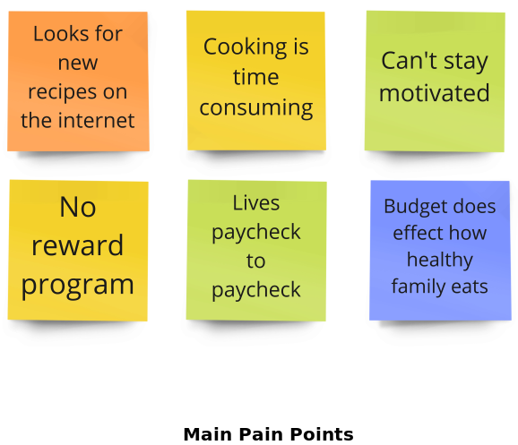
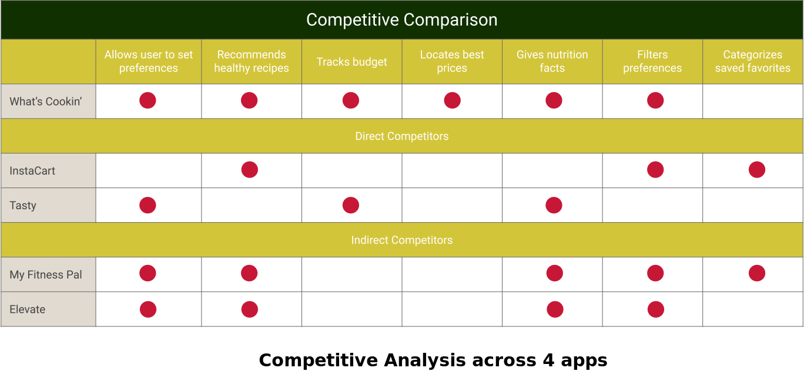

ABOUT THE PROJECT
Eating healthier is a goal that most of us have on our to-do lists but a lot of the time it seems as though everything is going against you to achieve that. Questions like, Why does eating healthy seem so expensive? What do I eat? How do I make it? People with a strict grocery budget are highly affected by this problem. How might we help budget conscious families eat healthier and save time so they can improve their quality of life and spend more valuable time with their friends and family.
The Idea
Our idea was to create an app that helps people make healthier eating choices, make healthy food affordable, and help people stay motivated. We wanted this digital solution to work for anyone with low income and wanting to adapt a healthier lifestyle.
Disciplines
& Tools
& Tools
User Research (Interviews & Surveys) & Analysis, Mobile User Experience Design (UI/UX), Interaction Design, Wireframing, Prototyping, In-person User Testing, Adobe XD.
Team
The team for this project consisted of:
- Marg Papakostas - UX/UI Designer
- Elizabeth Brown - UX Researcher
- Rylee Muir - UX/UI Designer
- Sai Paladugu - UX/UI Designer
My Responsibilities
- Defining the scope & strategy + planning the project
- Conducting user research (user interviews and surveys)
- Delivering solutions through UX Design methods and techniques (Interaction Design, Wireframing, Prototyping, User Testing and Visual Design)
Our Methodology
Our process begins with research. Then we define our solution and work toward ideation. We then design the experience through prototyping. Next, we test our users experience. We conclude with iterations and reflection.
STEP 1: USER RESEARCH & ANALYSIS
Target Users
We conducted several surveys and interviews with the goal to understand how low income families plan and budget healthy meals. Our main objectives were to understand how much time is spent in planning and preparing meals, how families budget groceries, and how they find the best prices on food. We were able to pull a great deal of data from the interviews we conducted. We then organized that data and grouped them into similarities. This helped us begin to understand what features and tools our users enjoyed and what features they were in need of. Our users were low income, whose healthy eating habits were affected by their income. They looked for new recipes on apps and on the internet but also found cooking too time consuming.
{kind=link}
Main Pain Points
& Key Findings
& Key Findings
From the surveys we conducted we realized and understood the main pain points of our users. Most of the people we talked to were honestly interested to makelifestyle changes and try to eat healthier, but we found out that cooking is time consuming, the can't stick into a new habit long enough, healthy food is expensive,cooking is time consuming and vey often they just don't know what to make.

User Persona: Jessica Anderson
Our affinity diagram helped us develop our user persona. Jessica, a 33 year old woman from Salt Lake City is married with young children. Jessica makes $50,000 a year as a customer service agent. She enjoys spending time with her family and on her photography hobby. She also knows how important self care is, she exercises daily and wants her family to eat healthier. Jessica works long hours, has a tight budget, and finds it hard to make time to prepare healthy meals. Jessica would like a tool that could help her know what to cook and how to prepare it.

{kind=link}
Problem Statement
Busy people with strict budgets and no disposable income find it difficult to improve their lifestyles due to lack of time, motivation, and high cost.
Competitor Analysis
For the next phase, we moved on to Competitive Analysis, where we looked at some of the apps that already existed in the market, which we could learn from. We looked at the following:
{kind=link}

STEP 2: IDEATION
Ideating User Focused Features
As a team we used the “I like, I wish, What if,” method of brainstorming in order to articulate features that our users liked and what features would be helpful to develop. This was an important step in understanding what features we should include in the What’s Cookin' app. A few key things we learned were that our users liked pictures, meal prep videos, and wanted to save time. We then set up a prioritization matrix to help us decide what features would be most valuable. The key features we focused on were the ability to find recipes quickly through tag filters, to have nutrition facts easily available, and to provide a list of ingredients and price breakdown by specific stores they choose.
{kind=link}
Prioritization Matrix
{kind=link}
What's Cookin Solution!
What’s Cookin’ suggests easy-to-make, quick, and budget friendly recipes that cater to your eating preferences. What’s Cookin’ looks through pricing data at grocery stores near you to find the best price for your ingredients. Our team of nutritionists and chefs add new recipes everyday that meet both your health and taste needs without going over your weekly budget.

Jessica's Scenario
It was important for us to keep Jessica as our key element in the ideation process. We created a scenario where she would be in need of the What’s Cookin’ app. This helped us visualize just how What’s Cookin’ could help someone in an applicable way.
{kind=link}
STEP 3: WIREFRAMING & PROTOTYPING
Low-Fidelity Prototype
To do our testing we set up four recorded zoom sessions. These sessions allowed us to see and make notes on how users interacted with the app. The testers were encouraged to vocalize their responses, and this gave us insight into features the user was searching for and what features the user found helpful. After completing user tests it was clear there were a few changes that we needed to make. We changed the icon of the list from a pencil to a notebook, making it easier to navigate to the list page. We also changed the edit function on the list page by adding the swipe interaction to delete each line item. We all felt that changes would make it much easier for users to navigate through our app.
{kind=link}
Usability Testing
We conducted 4 user tests over zoom. These sessions allowed us to study and make notes on how users interacted with the app. The testers were encouraged to vocalize as many of their thoughts are possible, this gave us insight into features the user was struggling with and what they found helpful. Our first goal was to test our onboarding process. All of our participants were easily able to create an account, set their preferences, and then edit those preferences.
{kind=link}
Iterations
{kind=link}
Creating User Focused Features
What’s Cookin’ will be a very helpful tool for low income families buy helping them stay within their grocery budget, eat healthier and have more time to spend with people they love and hobbies they enjoy.
{kind=link}
-Thank You-
UX/UI Design Project
Re-designing the HSU website.
Humane Society Website Revision
UX/UI Design Project
Designing an app that helps low income families to eat healthier at a lower cost.
What's Cookin' App Design
UX/UI Design Project
Designing an app that helps pet owners take better care of their pets with training, socialization, and motivation.
Happy Dog App Design

UX/UI Design Project
Re-designing a government website.